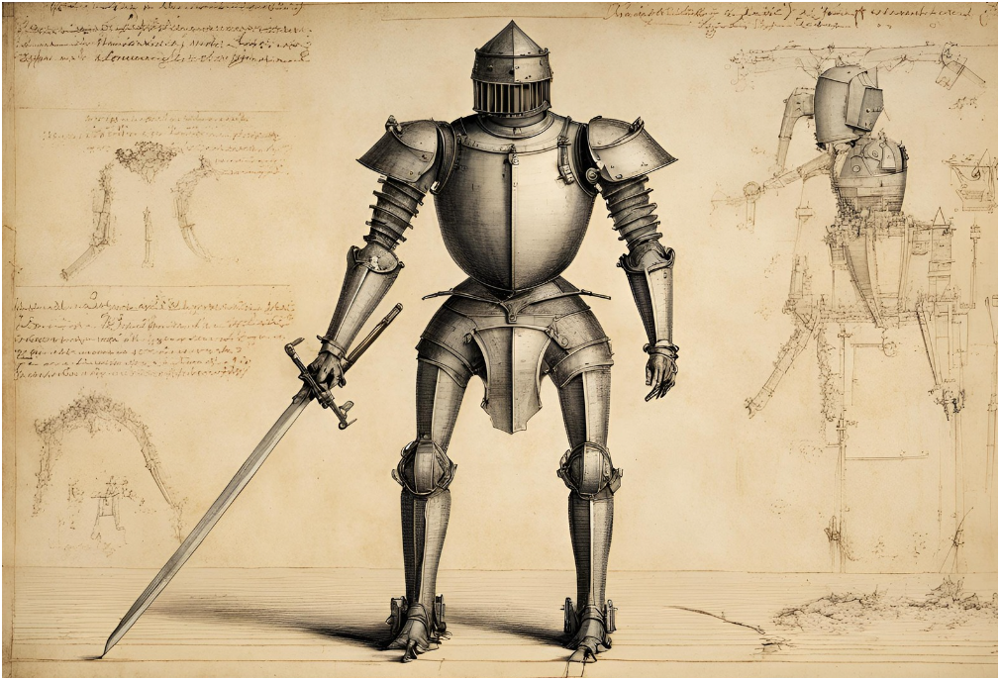

Leonardo da Vinci, renowned for his multifaceted genius, left an indelible mark not only in art and engineering but also in the realm of robotics. His visionary sketches, centuries ahead of their time, laid the groundwork for what would eventually evolve into humanoid robotics.
Leonardo da Vinci's Robotic Knight
Among da Vinci's many innovative designs was a mechanical knight, conceptualized around 1495. Although never constructed during his lifetime, his detailed sketches revealed a humanoid automaton capable of basic movements—sitting up, gesturing with its arms, and moving its head and jaw. Inspired by his deep anatomical studies, da Vinci's robotic knight utilized pulleys, gears, and levers to mimic human motion, showcasing his unparalleled understanding of mechanics and human physiology.

Da Vinci's exploration of human proportions, famously depicted in his Vitruvian Man, underscored his ability to blend artistry with engineering precision. This fusion of disciplines laid a foundation for future inventors and engineers intrigued by the possibility of creating lifelike machines.
Impact on Early Robotics
The influence of da Vinci's designs reverberated through the centuries, inspiring pioneers of early humanoid robotics such as Jacques de Vaucanson and Pierre Jaquet-Droz. These innovators, drawing from da Vinci's anatomical insights, created automatons that mimicked human actions and interactions, paving the way for advancements in mechanical engineering and artificial intelligence.
Da Vinci's enduring legacy is palpable in contemporary humanoid robots like ASIMO and Sophia, which emulate human movements and exhibit advanced capabilities in speech and interaction. His profound understanding of biomechanics continues to inform the design and development of these sophisticated machines, pushing the boundaries of what is achievable in robotics.
Conclusion
Leonardo da Vinci's visionary sketches not only epitomized artistic brilliance but also foreshadowed a future where machines could embody human-like qualities. His pioneering work in understanding human anatomy and replicating its mechanics laid a cornerstone for the field of robotics, inspiring generations of scientists and engineers to explore the intersection of art, science, and technology. As we continue to innovate in robotics, da Vinci's legacy serves as a testament to the enduring impact of visionary thinking and interdisciplinary curiosity.